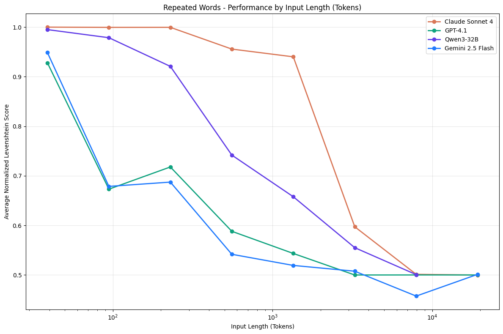

Evidence 2
It breaks at 32K, not at 1M

NoLiMa: needle and distractor share no words with the question. No keyword overlap to latch onto.

18 models. 194,480 calls. Same result.
Sources: NoLiMa, ICML 2025 | Chroma, Context Rot